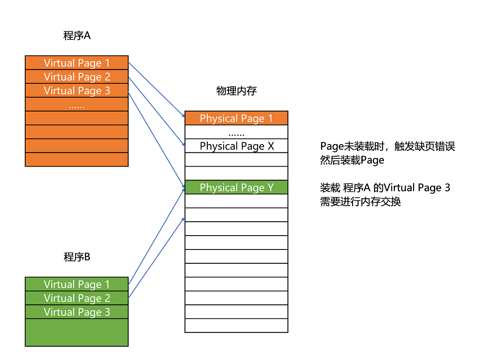
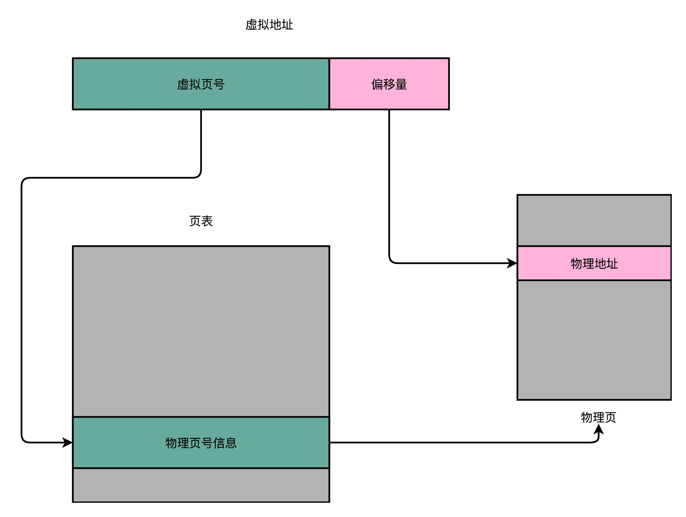
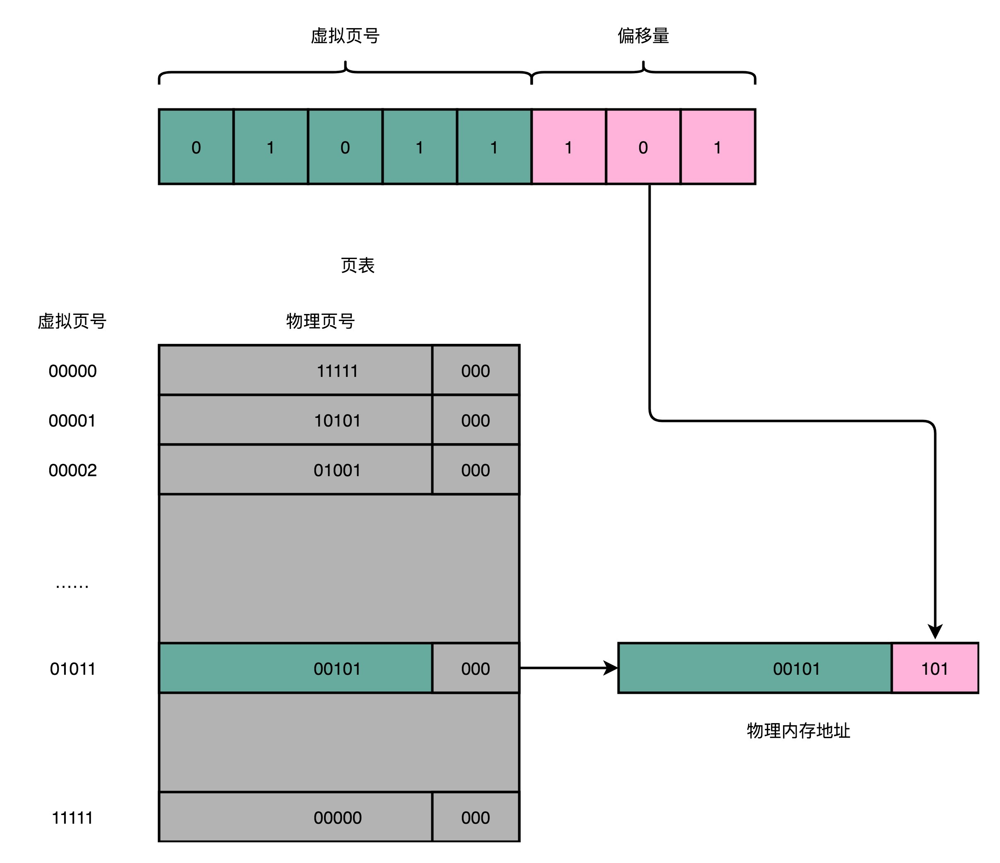
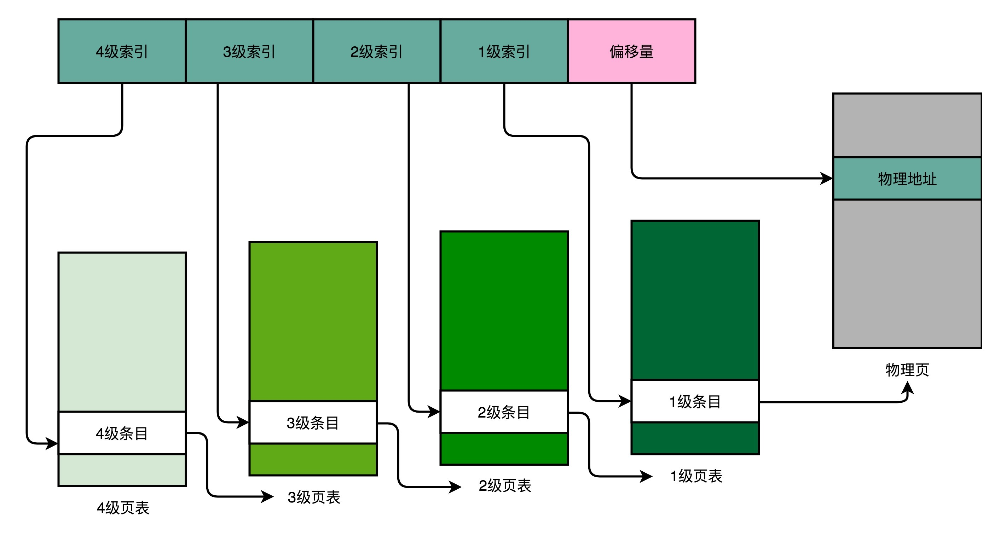

- 00 开篇词 为什么你需要学习计算机组成原理？.md
- 01 冯·诺依曼体系结构：计算机组成的金字塔.md
- 02 给你一张知识地图，计算机组成原理应该这么学.md
- 03 通过你的CPU主频，我们来谈谈“性能”究竟是什么？.md
- 04 穿越功耗墙，我们该从哪些方面提升“性能”？.md
- 05 计算机指令：让我们试试用纸带编程.md
- 06 指令跳转：原来if...else就是goto.md
- 07 函数调用：为什么会发生stack overflow？.md
- 08 ELF和静态链接：为什么程序无法同时在Linux和Windows下运行？.md
- 09 程序装载：“640K内存”真的不够用么？.md
- 10 动态链接：程序内部的“共享单车”.md
- 11 二进制编码：“手持两把锟斤拷，口中疾呼烫烫烫”？.md
- 12 理解电路：从电报机到门电路，我们如何做到“千里传信”？.md
- 13 加法器：如何像搭乐高一样搭电路（上）？.md
- 14 乘法器：如何像搭乐高一样搭电路（下）？.md
- 15 浮点数和定点数（上）：怎么用有限的Bit表示尽可能多的信息？.md
- 16 浮点数和定点数（下）：深入理解浮点数到底有什么用？.md
- 17 建立数据通路（上）：指令加运算=CPU.md
- 18 建立数据通路（中）：指令加运算=CPU.md
- 19 建立数据通路（下）：指令加运算=CPU.md
- 20 面向流水线的指令设计（上）：一心多用的现代CPU.md
- 21 面向流水线的指令设计（下）：奔腾4是怎么失败的？.md
- 22 冒险和预测（一）：hazard是“危”也是“机”.md
- 23 冒险和预测（二）：流水线里的接力赛.md
- 24 冒险和预测（三）：CPU里的“线程池”.md
- 25 冒险和预测（四）：今天下雨了，明天还会下雨么？.md
- 26 Superscalar和VLIW：如何让CPU的吞吐率超过1？.md
- 27 SIMD：如何加速矩阵乘法？.md
- 28 异常和中断：程序出错了怎么办？.md
- 29 CISC和RISC：为什么手机芯片都是ARM？.md
- 30 GPU（上）：为什么玩游戏需要使用GPU？.md
- 31 GPU（下）：为什么深度学习需要使用GPU？.md
- 32 FPGA、ASIC和TPU（上）：计算机体系结构的黄金时代.md
- 33 解读TPU：设计和拆解一块ASIC芯片.md
- 34 理解虚拟机：你在云上拿到的计算机是什么样的？.md
- 35 存储器层次结构全景：数据存储的大金字塔长什么样？.md
- 36 局部性原理：数据库性能跟不上，加个缓存就好了？.md
- 37 理解CPU Cache（上）：“4毫秒”究竟值多少钱？.md
- 38 高速缓存（下）：你确定你的数据更新了么？.md
- 39 MESI协议：如何让多核CPU的高速缓存保持一致？.md
- 40 理解内存（上）：虚拟内存和内存保护是什么？.md
- 41 理解内存（下）：解析TLB和内存保护.md
- 42 总线：计算机内部的高速公路.md
- 43 输入输出设备：我们并不是只能用灯泡显示“0”和“1”.md
- 44 理解IO_WAIT：IO性能到底是怎么回事儿？.md
- 45 机械硬盘：Google早期用过的“黑科技”.md
- 46 SSD硬盘（上）：如何完成性能优化的KPI？.md
- 47 SSD硬盘（下）：如何完成性能优化的KPI？.md
- 48 DMA：为什么Kafka这么快？.md
- 49 数据完整性（上）：硬件坏了怎么办？.md
- 50 数据完整性（下）：如何还原犯罪现场？.md
- 51 分布式计算：如果所有人的大脑都联网会怎样？.md
- 52 设计大型DMP系统（上）：MongoDB并不是什么灵丹妙药.md
- 53 设计大型DMP系统（下）：SSD拯救了所有的DBA.md
- 54 理解Disruptor（上）：带你体会CPU高速缓存的风驰电掣.md
- 55 理解Disruptor（下）：不需要换挡和踩刹车的CPU，有多快？.md
- 结束语 知也无涯，愿你也享受发现的乐趣.md
40 理解内存（上）：虚拟内存和内存保护是什么？
我们在专栏一开始说过，计算机有五大组成部分，分别是：运算器、控制器、存储器、输入设备和输出设备。如果说计算机最重要的组件，是承担了运算器和控制器作用的 CPU，那内存就是我们第二重要的组件了。内存是五大组成部分里面的存储器，我们的指令和数据，都需要先加载到内存里面，才会被 CPU 拿去执行。
专栏第 9 讲，我们讲了程序装载到内存的过程。可以知道，在我们日常使用的 Linux 或者 Windows 操作系统下，程序并不能直接访问物理内存。

我们的内存需要被分成固定大小的页（Page），然后再通过虚拟内存地址（Virtual Address）到物理内存地址（Physical Address）的地址转换（Address Translation），才能到达实际存放数据的物理内存位置。而我们的程序看到的内存地址，都是虚拟内存地址。
既然如此，这些虚拟内存地址究竟是怎么转换成物理内存地址的呢？这一讲里，我们就来看一看。
简单页表
想要把虚拟内存地址，映射到物理内存地址，最直观的办法，就是来建一张映射表。这个映射表，能够实现虚拟内存里面的页，到物理内存里面的页的一一映射。这个映射表，在计算机里面，就叫作页表（Page Table）。
页表这个地址转换的办法，会把一个内存地址分成页号（Directory）和偏移量（Offset）两个部分。这么说太理论了，我以一个 32 位的内存地址为例，帮你理解这个概念。
其实，前面的高位，就是内存地址的页号。后面的低位，就是内存地址里面的偏移量。做地址转换的页表，只需要保留虚拟内存地址的页号和物理内存地址的页号之间的映射关系就可以了。同一个页里面的内存，在物理层面是连续的。以一个页的大小是 4K 比特（4KiB）为例，我们需要 20 位的高位，12 位的低位。

总结一下，对于一个内存地址转换，其实就是这样三个步骤：
- 把虚拟内存地址，切分成页号和偏移量的组合；
- 从页表里面，查询出虚拟页号，对应的物理页号；
- 直接拿物理页号，加上前面的偏移量，就得到了物理内存地址。

看起来这个逻辑似乎很简单，很容易理解，不过问题马上就来了。你能算一算，这样一个页表需要多大的空间吗？我们以 32 位的内存地址空间为例，你可以暂停一下，拿出纸笔算一算。
不知道你算出的数字是多少？32 位的内存地址空间，页表一共需要记录 2^20 个到物理页号的映射关系。这个存储关系，就好比一个 2^20 大小的数组。一个页号是完整的 32 位的 4 字节（Byte），这样一个页表就需要 4MB 的空间。听起来 4MB 的空间好像还不大啊，毕竟我们现在的内存至少也有 4GB，服务器上有个几十 GB 的内存和很正常。

不过，这个空间可不是只占用一份哦。我们每一个进程，都有属于自己独立的虚拟内存地址空间。这也就意味着，每一个进程都需要这样一个页表。不管我们这个进程，是个本身只有几 KB 大小的程序，还是需要几 GB 的内存空间，都需要这样一个页表。如果你用的是 Windows，你可以打开你自己电脑上的任务管理器看看，现在你的计算机里同时在跑多少个进程，用这样的方式，页表需要占用多大的内存。
这还只是 32 位的内存地址空间，现在大家用的内存，多半已经超过了 4GB，也已经用上了 64 位的计算机和操作系统。这样的话，用上面这个数组的数据结构来保存页面，内存占用就更大了。那么，我们有没有什么更好的解决办法呢？你可以先仔细思考一下。
多级页表
仔细想一想，我们其实没有必要存下这 2^20 个物理页表啊。大部分进程所占用的内存是有限的，需要的页也自然是很有限的。我们只需要去存那些用到的页之间的映射关系就好了。如果你对数据结构比较熟悉，你可能要说了，那我们是不是应该用哈希表（Hash Map）这样的数据结构呢？
很可惜你猜错了：）。在实践中，我们其实采用的是一种叫作多级页表（Multi-Level Page Table）的解决方案。这是为什么呢？为什么我们不用哈希表而用多级页表呢？别着急，听我慢慢跟你讲。
我们先来看一看，一个进程的内存地址空间是怎么分配的。在整个进程的内存地址空间，通常是“两头实、中间空”。在程序运行的时候，内存地址从顶部往下，不断分配占用的栈的空间。而堆的空间，内存地址则是从底部往上，是不断分配占用的。
所以，在一个实际的程序进程里面，虚拟内存占用的地址空间，通常是两段连续的空间。而不是完全散落的随机的内存地址。而多级页表，就特别适合这样的内存地址分布。
我们以一个 4 级的多级页表为例，来看一下。同样一个虚拟内存地址，偏移量的部分和上面简单页表一样不变，但是原先的页号部分，我们把它拆成四段，从高到低，分成 4 级到 1 级这样 4 个页表索引。

对应的，一个进程会有一个 4 级页表。我们先通过 4 级页表索引，找到 4 级页表里面对应的条目（Entry）。这个条目里存放的是一张 3 级页表所在的位置。4 级页面里面的每一个条目，都对应着一张 3 级页表，所以我们可能有多张 3 级页表。
找到对应这张 3 级页表之后，我们用 3 级索引去找到对应的 3 级索引的条目。3 级索引的条目再会指向一个 2 级页表。同样的，2 级页表里我们可以用 2 级索引指向一个 1 级页表。
而最后一层的 1 级页表里面的条目，对应的数据内容就是物理页号了。在拿到了物理页号之后，我们同样可以用“页号 + 偏移量”的方式，来获取最终的物理内存地址。
我们可能有很多张 1 级页表、2 级页表，乃至 3 级页表。但是，因为实际的虚拟内存空间通常是连续的，我们很可能只需要很少的 2 级页表，甚至只需要 1 张 3 级页表就够了。
事实上，多级页表就像一个多叉树的数据结构，所以我们常常称它为页表树（Page Table Tree）。因为虚拟内存地址分布的连续性，树的第一层节点的指针，很多就是空的，也就不需要有对应的子树了。所谓不需要子树，其实就是不需要对应的 2 级、3 级的页表。找到最终的物理页号，就好像通过一个特定的访问路径，走到树最底层的叶子节点。

以这样的分成 4 级的多级页表来看，每一级如果都用 5 个比特表示。那么每一张某 1 级的页表，只需要 2^5=32 个条目。如果每个条目还是 4 个字节，那么一共需要 128 个字节。而一个 1 级索引表，对应 32 个 4KiB 的也就是 16KB 的大小。一个填满的 2 级索引表，对应的就是 32 个 1 级索引表，也就是 512KB 的大小。
我们可以一起来测算一下，一个进程如果占用了 1MB 的内存空间，分成了 2 个 512KB 的连续空间。那么，它一共需要 2 个独立的、填满的 2 级索引表，也就意味着 64 个 1 级索引表，2 个独立的 3 级索引表，1 个 4 级索引表。一共需要 69 个索引表，每个 128 字节，大概就是 9KB 的空间。比起 4MB 来说，只有差不多 1/500。
不过，多级页表虽然节约了我们的存储空间，却带来了时间上的开销，所以它其实是一个“以时间换空间”的策略。原本我们进行一次地址转换，只需要访问一次内存就能找到物理页号，算出物理内存地址。但是，用了 4 级页表，我们就需要访问 4 次内存，才能找到物理页号了。
我们在前面两讲讲过，内存访问其实比 Cache 要慢很多。我们本来只是要做一个简单的地址转换，反而是一下子要多访问好多次内存。对于这个时间层面的性能损失，我们有没有什么更好的解决办法呢？那请你一定要关注下一讲的内容哦！
总结延伸
好了，这一讲的内容差不多了，我们来总结一下。
我们从最简单的进行虚拟页号一一映射的简单页表说起，仔细讲解了现在实际应用的多级页表。多级页表就像是一颗树。因为一个进程的内存地址相对集中和连续，所以采用这种页表树的方式，可以大大节省页表所需要的空间。而因为每个进程都需要一个独立的页表，这个空间的节省是非常可观的。
在优化页表的过程中，我们可以观察到，数组这样的紧凑的数据结构，以及树这样稀疏的数据结构，在时间复杂度和空间复杂度的差异。另外，纯粹理论软件的数据结构和硬件的设计也是高度相关的。
推荐阅读
对于虚拟内存的知识点，你可以再深入读一读《计算机组成与设计：硬件 / 软件接口》的第 5.7 章节。如果你觉得还不过瘾，可以进一步去读一读《What Every Programmer Should Know About Memory》的第 4 部分，也就是 Virtual Memory。